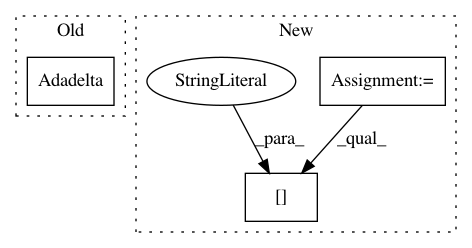

0a80b9769115d291f15c244429793eda4cb8ecad,tests/test_layer_transformer.py,,test_conv_to_wider_layer,#,60
Before Change
padding="same")
model = Sequential([a, b])
model.compile(loss=categorical_crossentropy,
optimizer=Adadelta(),
metrics=["accuracy"])
a2, b2 = conv_to_wider_layer(a, b, 5)
model2 = Sequential([a2, b2])
After Change
def test_conv_to_wider_layer():
model = get_conv_model()
conv1 = model.layers[1]
conv2 = model.layers[4]
bn1 = model.layers[2]
new_conv1, [new_conv2], [new_bn1] = conv_to_wider_layer(conv1, [conv2], [bn1], 3)
new_input = Input(shape=get_int_tuple(model.inputs[0].shape[1:]))
temp_tensor = new_conv1(new_input)
temp_tensor = new_bn1(temp_tensor)
temp_tensor = Activation("relu")(temp_tensor)
In pattern: SUPERPATTERN
Frequency: 3
Non-data size: 3
Instances
Project Name: keras-team/autokeras
Commit Name: 0a80b9769115d291f15c244429793eda4cb8ecad
Time: 2017-12-28
Author: jhfjhfj1@gmail.com
File Name: tests/test_layer_transformer.py
Class Name:
Method Name: test_conv_to_wider_layer
Project Name: keras-team/keras
Commit Name: 08f6bdeb5652550f36210f64aefda3d0d41e2d79
Time: 2019-05-28
Author: tanzheny@google.com
File Name: tests/keras/optimizers_test.py
Class Name:
Method Name: test_adadelta